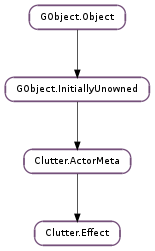

| Subclasses: | Clutter.OffscreenEffect |
|---|
| queue_repaint() |
None
None
| Name | Type | Access |
|---|---|---|
| parent_instance | Clutter.ActorMeta | r |
Bases: Clutter.ActorMeta
The Clutter.Effect structure contains only private data and should be accessed using the provided API
Queues a repaint of the effect. The effect can detect when the ‘paint’ method is called as a result of this function because it will not have the Clutter.EffectPaintFlags.ACTOR_DIRTY flag set. In that case the effect is free to assume that the actor has not changed its appearance since the last time it was painted so it doesn’t need to call Clutter.Actor.continue_paint () if it can draw a cached image. This is mostly intended for effects that are using a Cogl.Offscreen to redirect the actor (such as Clutter.OffscreenEffect ). In that case the effect can save a bit of rendering time by painting the cached texture without causing the entire actor to be painted.
This function can be used by effects that have their own animatable parameters. For example, an effect which adds a varying degree of a red tint to an actor by redirecting it through a Cogl.Offscreen might have a property to specify the level of tint. When this value changes, the underlying actor doesn’t need to be redrawn so the effect can call Clutter.Effect.queue_repaint () to make sure the effect is repainted.
Note however that modifying the position of the parent of an actor may change the appearance of the actor because its transformation matrix would change. In this case a redraw wouldn’t be queued on the actor itself so the Clutter.EffectPaintFlags.ACTOR_DIRTY would still not be set. The effect can detect this case by keeping track of the last modelview matrix that was used to render the actor and veryifying that it remains the same in the next paint.
Any other effects that are layered on top of the passed in effect will still be passed the Clutter.EffectPaintFlags.ACTOR_DIRTY flag. If anything queues a redraw on the actor without specifying an effect or with an effect that is lower in the chain of effects than this one then that will override this call. In that case this effect will instead be called with the Clutter.EffectPaintFlags.ACTOR_DIRTY flag set.